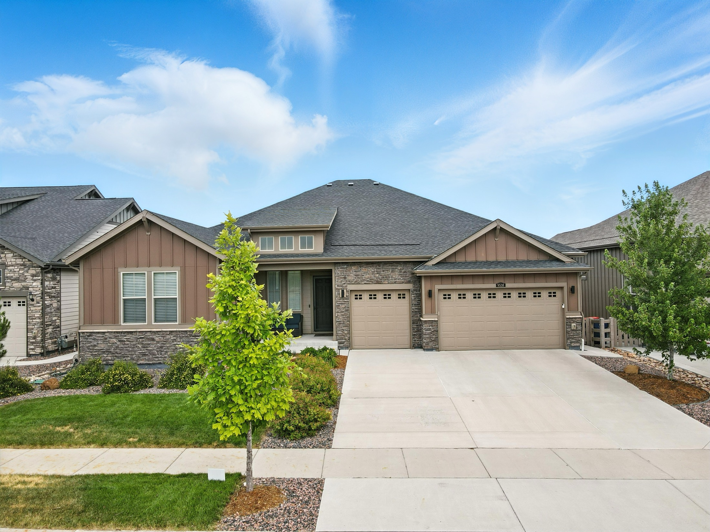

Start with an instant estimate, then get the part no algorithm can give you. Your free Home Value & Equity Report covers estimated current value, estimated available equity, recent sales in your area, and real market insight for your part of Colorado Springs, reviewed personally by a broker who has worked this market for more than 20 years.
Enter your address below and the tool pulls an instant estimate from public records and recent MLS activity. That is your starting number, and it costs nothing. I then review it myself and send the full Home Value & Equity Report, because no algorithm has walked through your house.
Jose's own home valuation widget plugin renders inside this zone. It supplies its own address lookup, its own lead capture, and its own report delivery. Do not hand-build a valuation form here.
An online estimate is built from what a computer can measure: square footage, bed and bath count, lot size, tax records, and whatever sold nearby. Those are real inputs and they will get you into the right neighborhood of a number.
They are not the whole picture. Condition and updates, floor plan, which way the back of the house faces, whether you look at Pikes Peak or at a fence, your school attendance area, how much road noise carries on a weekday evening. Those move the price in ways no model captures. So does timing, and so does how the home is prepared and presented before it goes live. That last piece is the one you control the most, and it is covered step by step in the seller's guide.
The instant estimate is step one, not the answer. Here is what happens after it, and why the number you end up with is one you can actually price against.
The widget above reads public records and recent MLS activity around your address and returns a fast baseline. It is genuinely useful for orientation, and it is free. Treat it as a range rather than a list price. It has never seen your kitchen.
I go into the Pikes Peak REALTOR® Services Corp MLS and pull what truly compares to your home: same pocket of the neighborhood, similar age, similar size, similar condition, recent enough to mean something. Then I adjust by hand. A finished basement, a three-car garage, a corner lot on a busy road, a roof replaced last spring. Each one moves the number, and each one has to be accounted for rather than averaged away.
Then I come see it. Condition, updates, layout, light, lot, view, noise, what a buyer registers in the first 30 seconds and what they notice on the second visit. I will also tell you which repairs are worth doing before you list and which ones to skip, because not every dollar you put in comes back out at closing.
You get one document: estimated current value, estimated available equity, recent sales in your area, and local market insight for your part of the Springs. If you are thinking about selling, it arrives with a pricing strategy and a plan attached. If you are not selling, it is still yours to keep and there is no follow-up you did not ask for. Sellers describe how that conversation actually goes in their reviews.
See How Selling WorksColorado Springs is not one market, and a single citywide figure will not tell you much about your address. Briargate and Northgate price against District 20 schools and newer construction. The Broadmoor is its own world. Fountain moves with Fort Carson. Black Forest and Peyton price on land, trees, and acreage. Monument answers to District 38 and the Tri-Lakes commute. The Powers Corridor turns on convenience and build era. Same city, very different conversations. You can see how I read each of those areas on the communities page.
A national estimator averages all of that together and then applies the average to your street. Twenty years and more than 1,200 transactions across the Pikes Peak region is what closes that gap. I also want to be clear about one thing: a valuation is not a home appraisal. In Colorado Springs an appraisal is ordered by the buyer's lender once a home is under contract, and it is performed by a licensed appraiser to protect the loan. My job on the front end is to price your home so that appraisal lands where it needs to, and so the deal does not come apart three weeks in.
Talk Through Your Number
The questions Colorado Springs homeowners ask me most before they request a report.
Honestly, it is worth what a qualified buyer will pay for it in today's market, and the only way to get close to that figure is to pair data with judgment. The tool above gives you an instant estimate from public and MLS records. I then check it against genuine comparable sales and, when you are ready, an in-person walkthrough. That combination is what produces a number you can price against instead of a number you have to defend.
Because each one runs a different model over a different slice of data. Some lean on county records, some on MLS activity, some weight the last 90 days far more heavily than others, and none of them have been inside your house. A "home valuation near me" search will hand you a range, not an answer. Use the range as a starting point, then have a local broker close the gap. That is exactly what the Home Value & Equity Report is for.
Yes. The report costs nothing and carries no obligation, and you do not have to be listing your home to ask for one. Plenty of people request a free home value estimate simply because they want to know where they stand on equity before deciding about a refinance, a second property, or a move that is still a couple of years out.
No, and the difference matters. A home appraisal in Colorado Springs is ordered by the buyer's lender after a property goes under contract, is performed by a licensed appraiser, and exists to protect the lender's loan. What I provide is a comparative market analysis, a broker's opinion of value built from comparable sales, condition, and current buyer demand. The analysis sets your list price. The appraisal later confirms the contract price. Getting the first one right is what keeps the second one from ending your deal.
Estimated equity is your estimated home value, minus what you still owe, minus the cost of selling. The report gives you an estimated value and an estimated equity figure based on the loan details you provide. For an exact payoff you will want a current statement from your lender, and if financing is part of your next move I can introduce you to Matt Hughes at Security National Mortgage, one of our outside partners.
Not at all. A good share of the reports I send go to people who are not selling this year and may never sell. Knowing your value and your equity is useful on its own, for insurance, for planning, for a refinance conversation, or just to know what you are sitting on. If it does turn into a move, you already know what your budget looks like on the buy side and you can start browsing homes for sale in Colorado Springs with real numbers behind you.
Two decades in the Springs, a Top 1% track record, and a real person on the other end of the line. Tell me what you're planning and I'll take it from there.
(719) 302-0602 · jose@vantegic.com